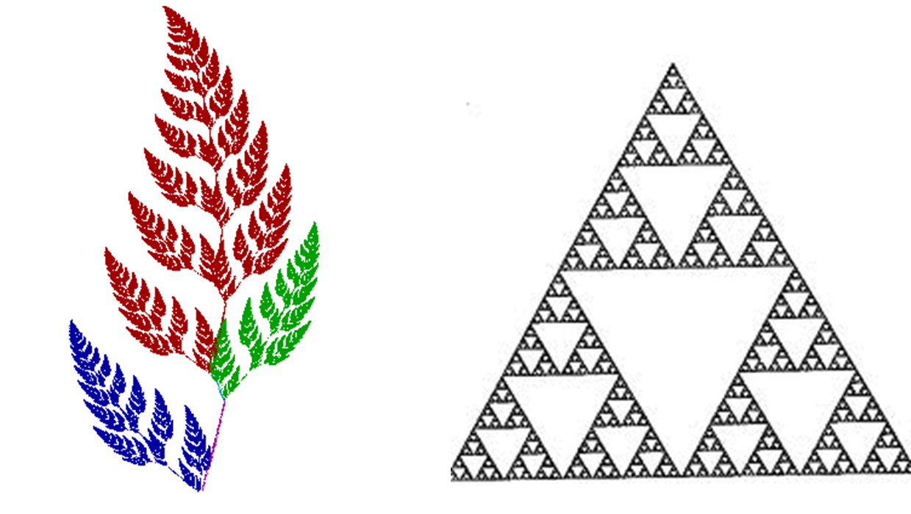
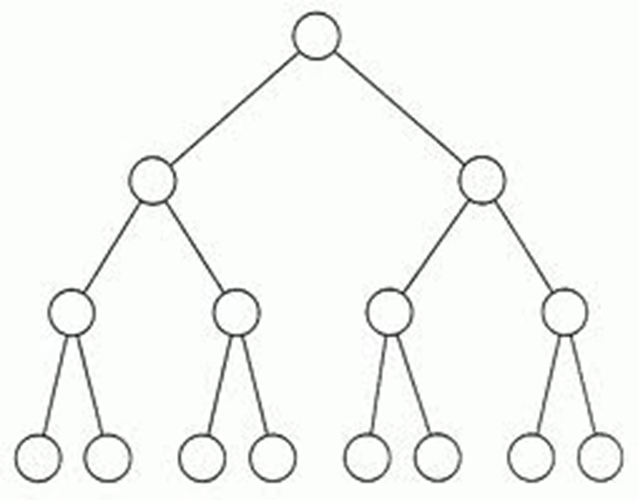

Deretan dan Rekursi#
Deretan (Sequence)#
Deretan adalah suatu urutan atau susunan elemen atau objek yang disusun secara teratur berdasarkan suatu aturan tertentu. Elemen dalam deretan biasanya berupa angka, huruf, simbol, atau objek lainnya, dan urutannya dapat didasarkan pada pola, nilai, atau hubungan tertentu
Definisi: Sebuah deretan adalah fungsi dari subset suatu himpunan bilangan bulat (biasanya N atau P) ke sebuah himpunan S.
N = {1, 2, 3, 4, … }
S misalnya {2, 4, 6, 8, …}, {1/3, 1/5, 1/7, …}, dsb
Notasi deretan: {an}
Deretan umumnya dinyatakan dalam suatu formula, misalnya:
an = 2 n
an = 1/n
an = 7 – 3n
Dalam konteks matematika, deretan sering merujuk pada barisan bilangan, yaitu kumpulan bilangan yang disusun dalam suatu pola tertentu. Misalnya:
Deretan bilangan ganjil: 1,3,5,7,…
Deretan bilangan genap: 2,4,6,8,…
Deretan bilangan yang membentuk deret aritmetika: 3,6,9,12….
Contoh-contoh deretan dan formulanya:
Deret Aritmetika#
Deret dengan pola kenaikan atau penurunan tetap.
Contoh: 2,5,8,11,14,…
Rumus suku ke-n:

Di mana:
a: suku pertama
b: beda (selisih antar suku
n: nomor suku yang dicari
Deret Geometri#
Deret dengan pola kelipatan tetap.
Contoh: 3,6,12,24,48,…
Rumus suku ke-n:

Di mana:
a: suku pertama
r: rasio (perbandingan antar suku,
n: nomor suku yang dicari
Deret Bilangan Kuadrat#
Deret dengan pola nilai berupa kuadrat bilangan bulat.
Contoh: 1,4,9,16,25,…
Rumus suku ke-n:

Deret Bilangan Kubik#
Deret dengan pola nilai berupa kubik bilangan bulat.
Contoh: 1,8,27,64,125,…
Rumus suku ke-n:

Deret Fibonacci#
Deret dengan pola di mana setiap suku merupakan jumlah dua suku sebelumnya.
Contoh: 0,1,1,2,3,5,8,…
Rumus suku ke-n (rekursif):

String#
String adalah deretan berhingga karakter berbentu a1a2a3a4…an Panjang string s adalah jumlah karakter di dalam string tersebut Contoh: Informatika adalah string dengan panjang 11 karakter 10100101 adalah string biner dengan panjang 8 bit
String kosong dilambangkan dengan $\( \lambda \)$ , panjangnya = 0
Penjumlahan deretan#
Jumlah deretan am, am+1, am+2,…,an adalah am + am+1, + am+2 + … an atau dalam notasi sumasi:
$\( \Sigma_{km}^n \)$ ak
k adalah index summasi,
m adalah batas bawah indeks,
n adalah batas atas indeks

Tugas pembuktian dari 3 rumus dibawah#
Beberapa sumasi sudah ditemukan rumus penjumlahannya sebagai berikut:


Sumasi ganda#
Di dalam algoritma, kita perlu menghitung berapa kali suatu operasi tertentu dilakukan di dalam sebuah kalang bersarang (nested loop) . Penjumlahan semua operasi di dalam kalang bersarang dinyatakan dalam bentuk sumasi ganda.
Contoh: 

Contoh penggunaan: Berapa kali operasi + dilakukan didalam algoritma di bawah ini


Rekursi#
Sebuah objek dikatakan rekursi (recursive) jika ia didefinisikan dalam terminologi dirinya sendiri.
Proses mendefinisikan objek dalam terminologi dirinya sendiri disebut rekursi (recursion).
Objek fraktal adalah contoh bentuk rekursif

Fungsi rekursif#


Contoh 7: Nyatakan n! dalam definisi rekursif
Solusi: 
Misalkan f(n) = n!, maka

Menghitung 5! secara rekursif adalah:

ALgoritma menghitung faktorial:#
function Faktorial (input n:integer) -> integer { mengembalikan nilai n!; basis: jika n = 0, maka 0! = 1 rekuens: jika n > 0, maka n! = n x (n-1)! }
DEKLARASI
ALGORITMA:
if n = 0 then
return 1 {basis}
else
return * Faktorial(n-1) {rekuens}
end
Contoh 8; barisan Fibonacci 0,1,1,2,3,5,8,11,10,… Dapat dinyatakan secara rekursif sebagai berikut:

Contoh 9: Fungsi (polinom) Chebyshev dinyatakan sebagai

Contoh 10: Sumasi  didefinisikan secara rekursif sebagai berikut:
didefinisikan secara rekursif sebagai berikut:

sehingga 

Solusi:
 sehingga:
sehingga: 
 =>
=> 
Struktur Rekursif#
Struktur data yang penting dalam komputer adalah pohon biner (binary tree). 
simpul (node) pada pohon biner mempunyai paling banyak dua buah anak.
Jumlah anak pada setiap simpul bisa 1, 2, atau 0.
Simpul yang mempunyai anak disebut simpul cabang (branch node) atau simpul dalam (Interval node)
Simpul yang tidak mempunyai anak disebut simpul daun (leave)
Pohon biner#
Pohon biner adalah stuktur yang rekursif, sebab setiap simpul mempunyai cabang yang juga berupa pohon. Setiap cabang disebut upapohon (subtree)

Oleh karena itu, pohon daoat didefinisikan secara rekursif sebagi berikut: (i) Basis: kosong adalah pohon biner (ii) Rekurens: Jika T1 dan T2 adalah pohon biner , maka adalah pohon biner
Proses pembentukan pohon biner secara rekursif:
(i)
(ii)